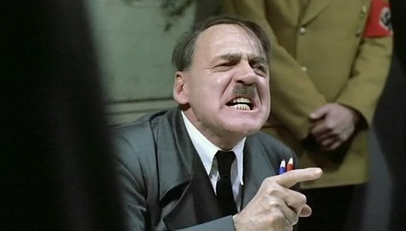
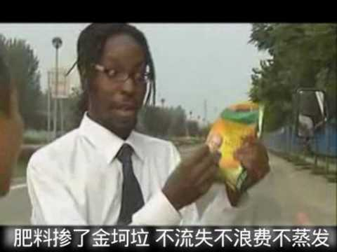
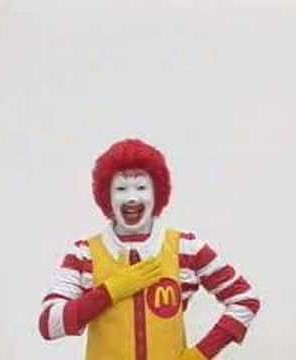

在這裡我會舉出幾個我覺得比較經典、廣為人知的素材介紹，他們應該可以比之前介紹的幾個素材引起更好的共鳴。
( 應該吧 )
元首 (帝國的毀滅)
|
《帝国的毀滅》是一部描述二戰時期德國歷史的電影。 |
 |
金坷垃
|
金坷垃是一種自稱可以促進植物礦物質吸收（氮磷鉀）、能大幅度提高農產品產量的肥料添加劑。該產品的電視廣告在2007年左右在中國大陸的一些地區電視台中播出。因為其電視廣告詞琅琅上口，且內容誇大不實，被華人網民當作惡搞與揶揄的對象，而成為一種網路文化。 |
 |
藍藍路
|
來自於日本麥當勞一個系列廣告，名為「麥當勞叔叔的小秘密」，該廣告中提出了許多莫名其妙的問題，例如麥當勞叔叔的頭髮為什麼是紅的，麥當勞叔叔的鞋子有多長，麥當勞叔叔會跳舞嗎等等。 |
 |